70,9 giây · 1920×1080 · giọng vi-VN-HoaiMyNeural · phong cách thaifex-journey
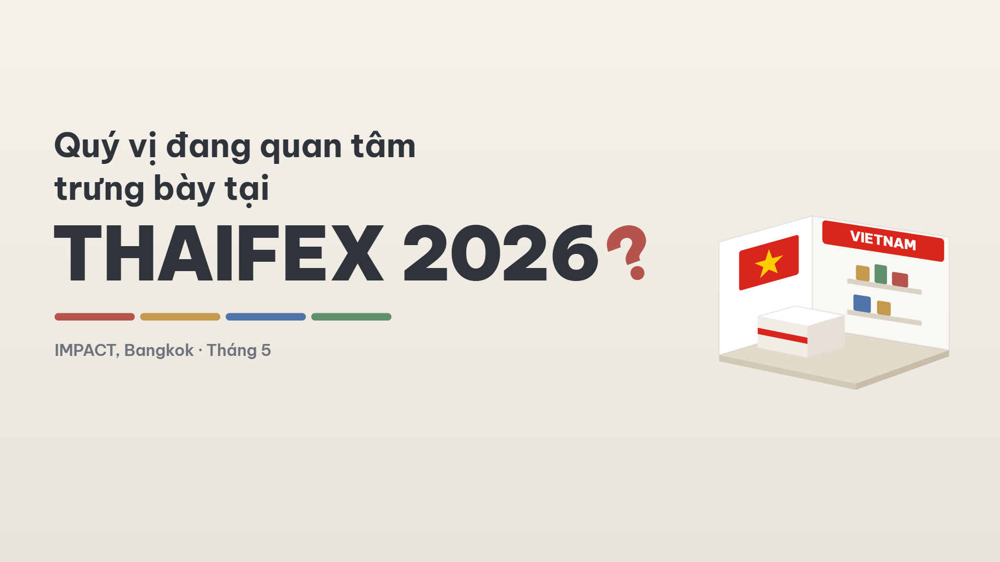
Câu hỏi hiện theo lời đọc, "THAIFEX 2026" bung lên đúng chữ "Thaifex", dải 4 màu kẻ ra, gian hàng Quốc gia tự dựng.
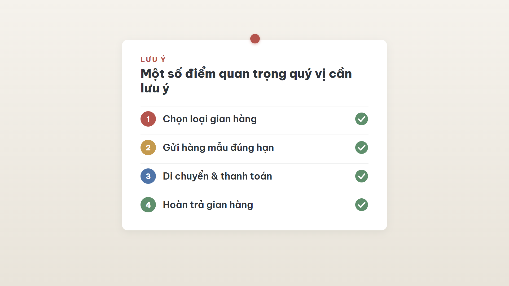
Bảng trượt vào, 4 dòng lần lượt được tick.
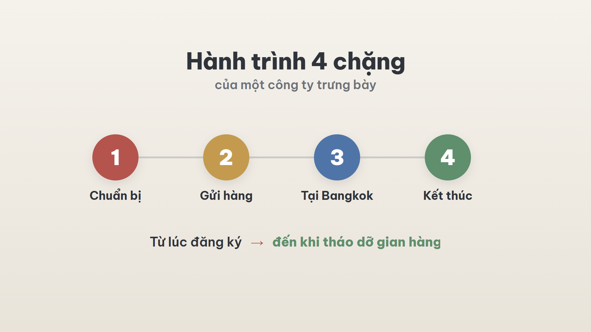
4 vòng tròn bung ra đúng lúc "bốn chặng", đường nối tự vẽ; "Từ lúc đăng ký → đến khi tháo dỡ gian hàng".
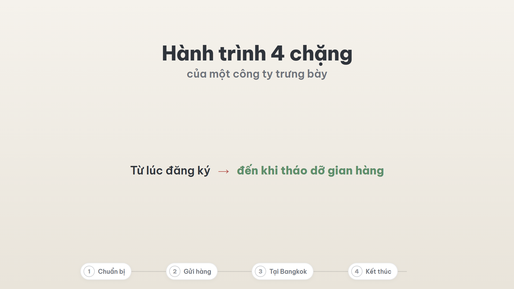
Sơ đồ thu nhỏ xuống cạnh dưới, thành thanh tiến trình đi suốt video.
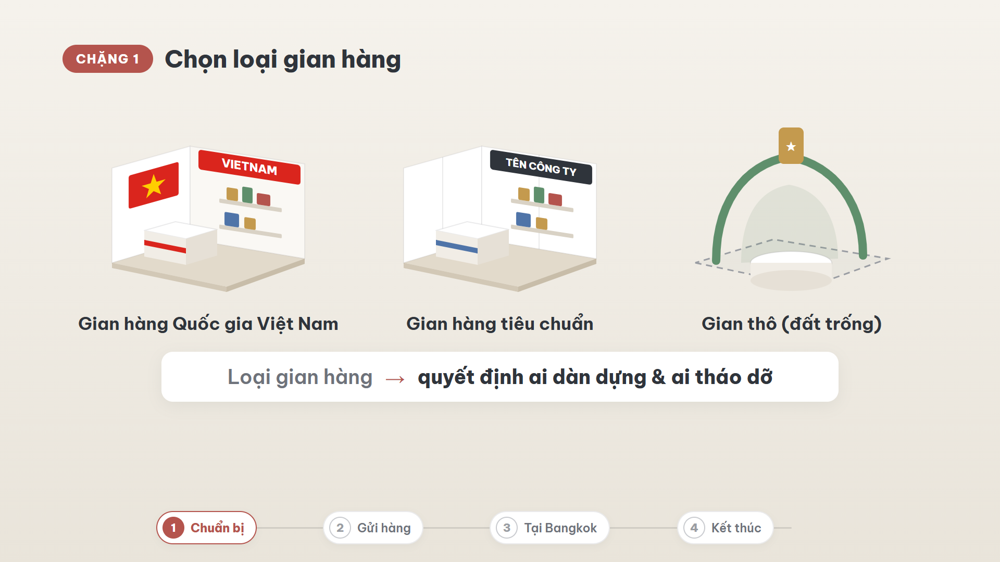
3 gian hàng dựng lên đúng lúc được nhắc; dòng thông điệp "Loại gian hàng → quyết định ai dàn dựng & ai tháo dỡ".
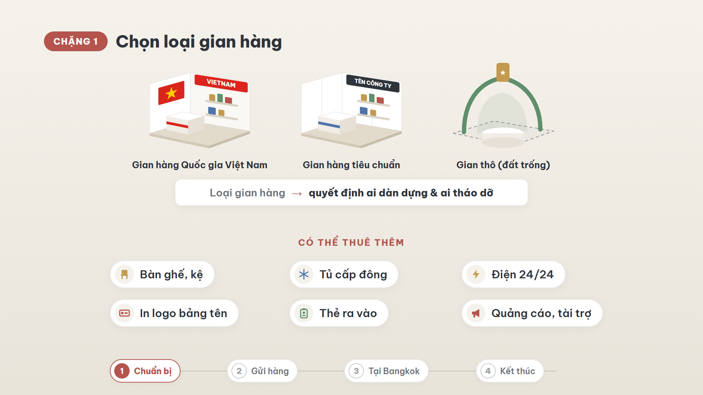
Cụm trên thu nhỏ, 6 chip nảy lên theo lời đọc.
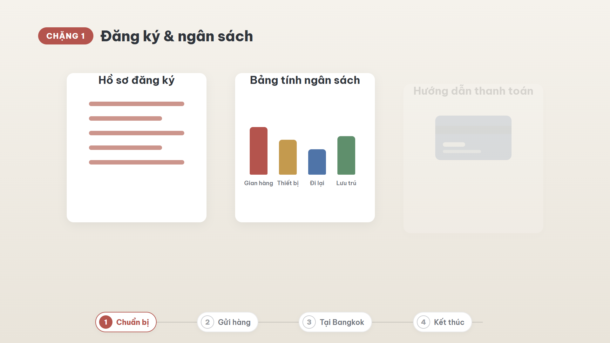
Hồ sơ tự điền, cột ngân sách mọc lên (không ghi số tiền), dấu tick thanh toán.
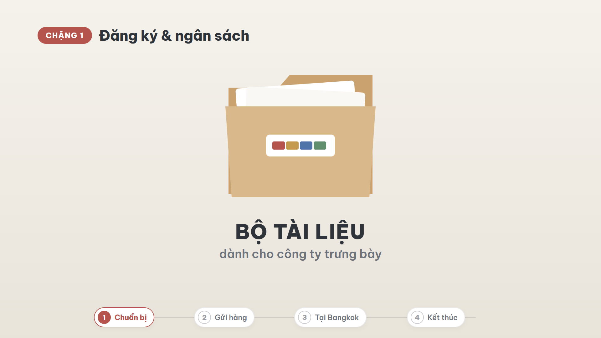
Ba thẻ gom vào tập "BỘ TÀI LIỆU dành cho công ty trưng bày".
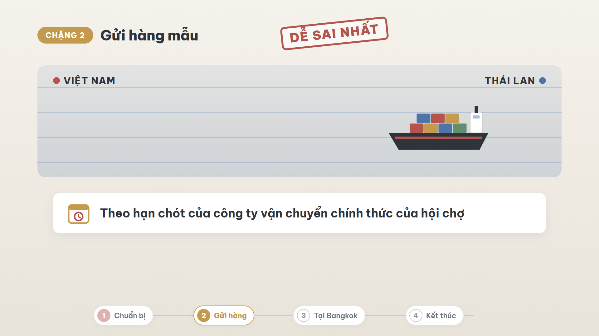
Dấu "DỄ SAI NHẤT" đập xuống, tàu container Việt Nam → Thái Lan, thẻ hạn chót.
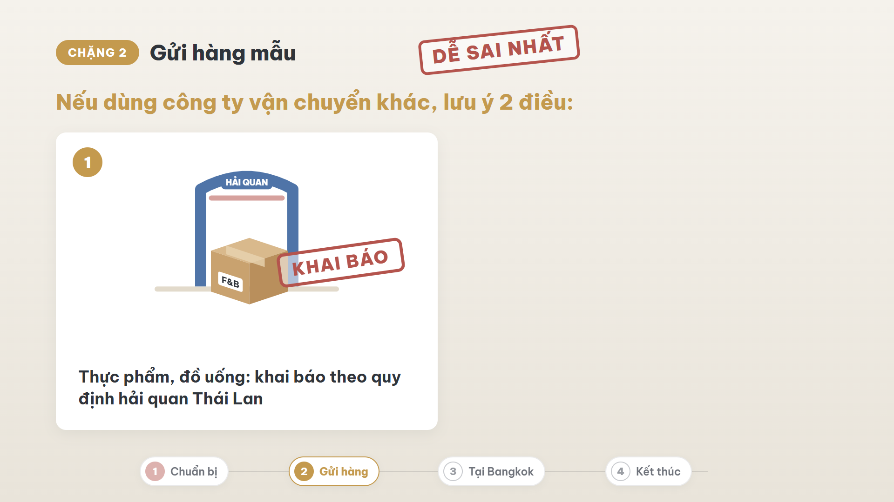
"Nếu dùng công ty vận chuyển khác, lưu ý 2 điều"; thùng F&B qua cổng hải quan, dấu "KHAI BÁO".
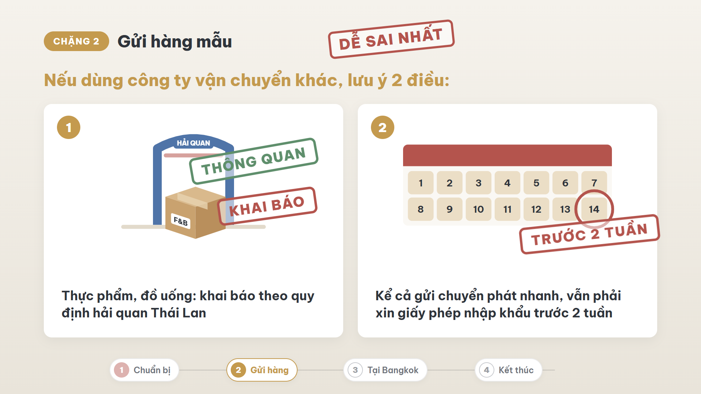
Lịch đếm tới 14, khoanh đỏ, dấu "TRƯỚC 2 TUẦN"; kết bằng dấu xanh "THÔNG QUAN".